设置Python版本
新建Python项目后，记得要
- 选择
Python版本- =设置Python环境
- =设置Python解析器
- =Python虚拟环境
- （如果是虚拟环境的话）
- 尤其是
- 当系统中安装多个版本的Python
- 既有Python 2
- 又有Python 3
- 甚至有多个版本的Python 3
- 或本身有个Python虚拟环境
- 比如用
virtualenv/pipenv等创建出来的Python虚拟环境
- 比如用
- 当系统中安装多个版本的Python
否则会出现：
- 无法正常调试
- 找不到已安装的库
下面详细介绍一下，新建Python项目后后，如何设置对应的：
PyCharm中设置当前项目的Python解析器
新建Python项目（或者打开一个已有Pyhton代码的项目）后，会提示你设置python解析器的：
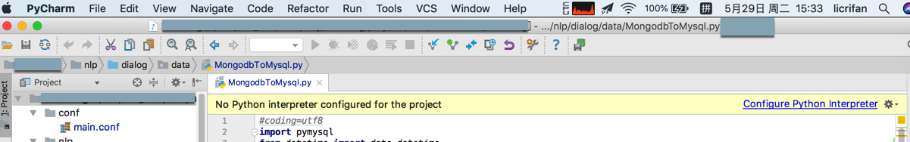
点击后，等价于：
PyCharm->Preferences->Project xxx->Project Interpreter
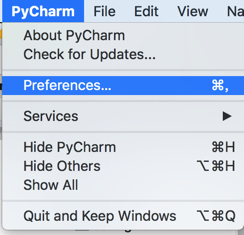
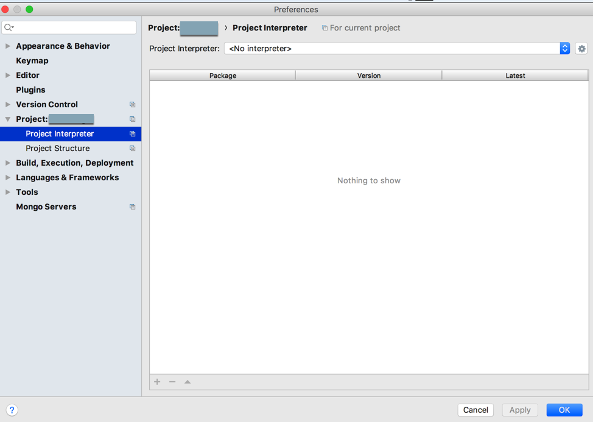
此处，通过pipenv添加了虚拟环境后，再去此处设置对应的python解析器：
点击Show All
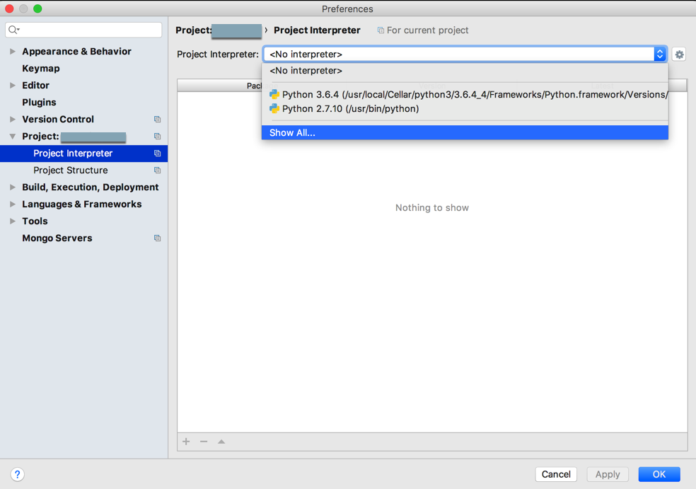
列表中没有刚新建的虚拟环境中的python解析器，所以去Add local：
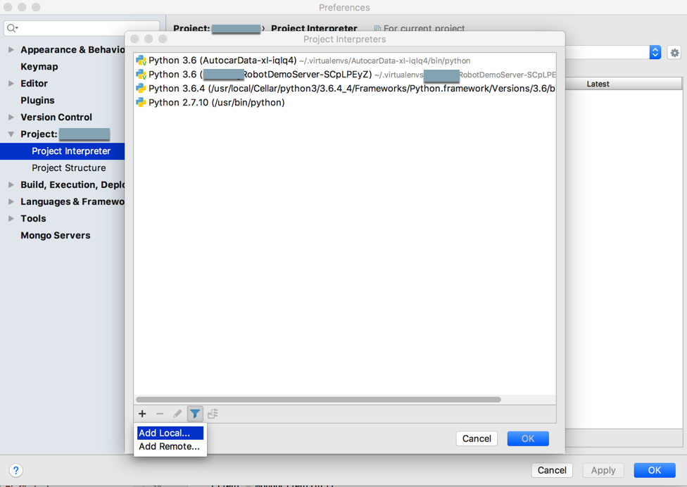
然后发现PyCharm中已经自动帮我们检测到并选择好了：
Existing environment中的interpreter，是我们新建的virtualenv中的python解析器：
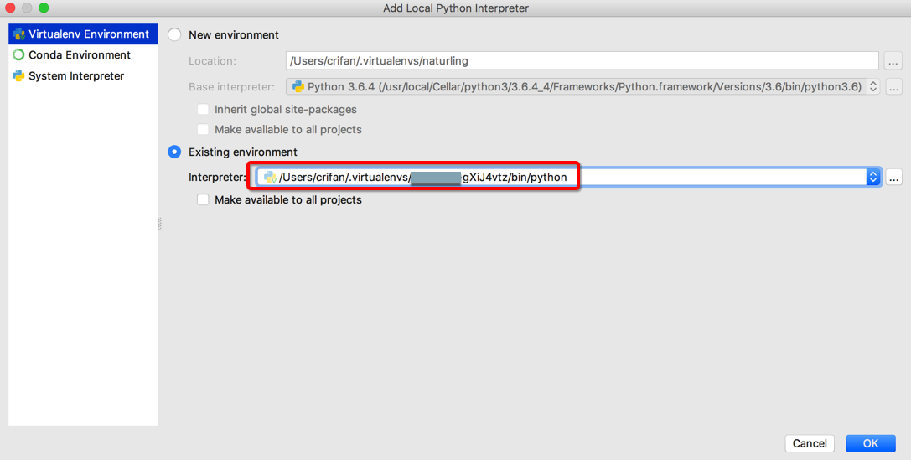
点击列表，还可以看到其他检测出来的虚拟环境的解析器：
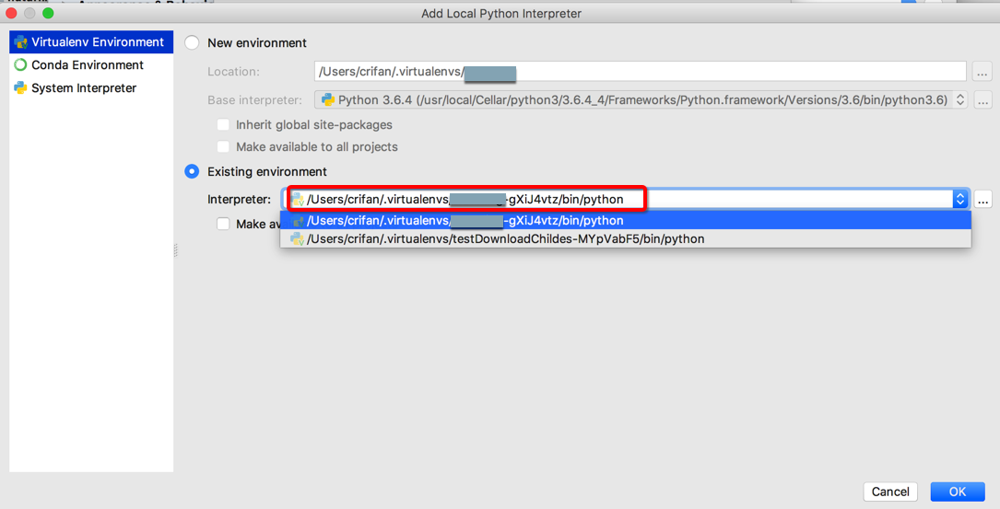
注：如果当前没有识别出你的Python版本，则需要自己手动输入路径去添加。
如果是Virtualenv创建的虚拟环境，一般对应的路径都在：
/Users/YourUserName/.virtualenvs/YourProjectName-F4MCntjh/bin/python
然后自己去选择：
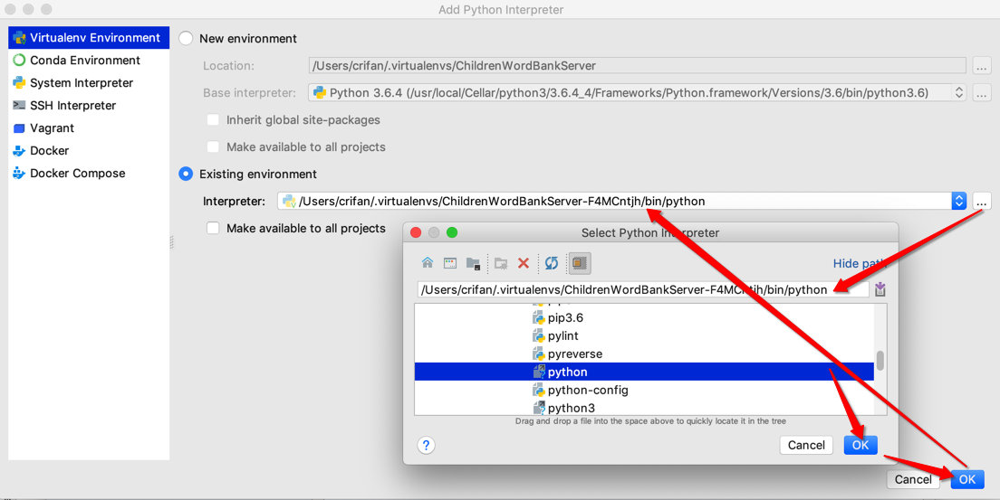
确定后，返回添加页：
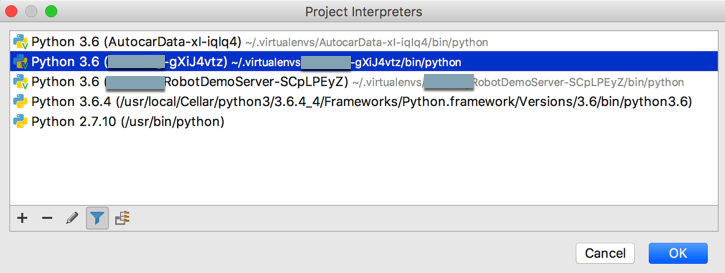
loading后，就可以找到当前python虚拟环境解析器中所安装的库了：
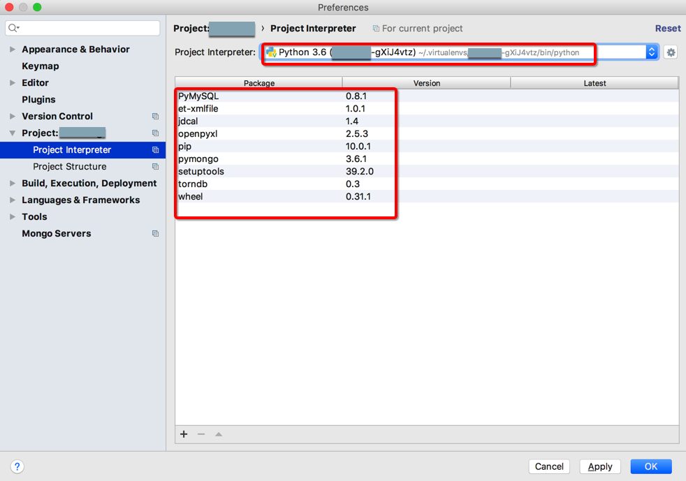
项目底部会显示，有后台任务去：
- 更新python解释器
- 重新建立索引indexing
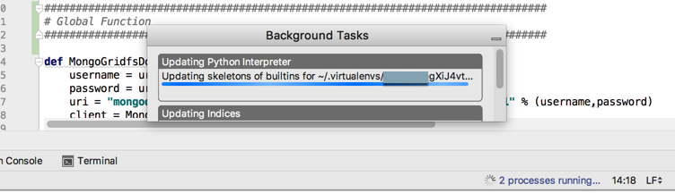

然后就可以在项目左边的文件结构中的External Libraries中看到当前Python解析器=当前Python版本，和已安装的相关库了：
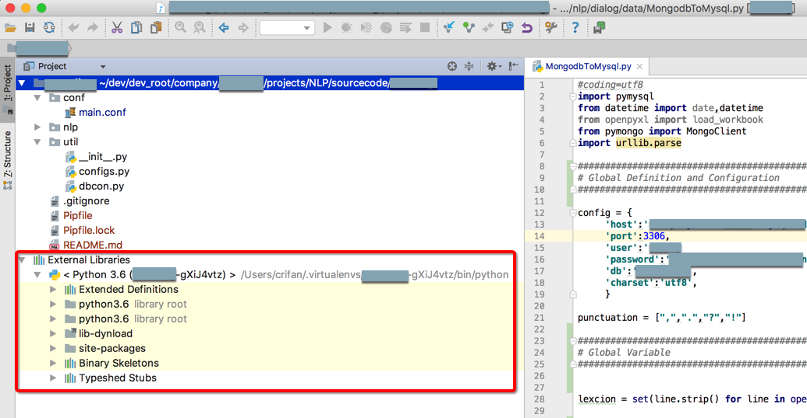